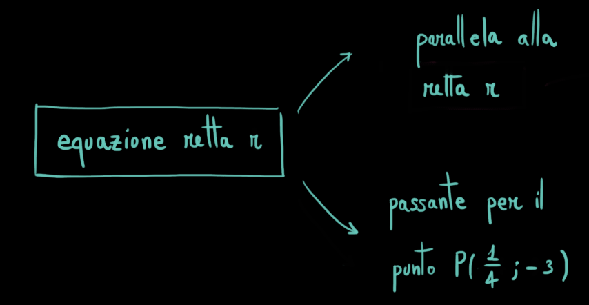

Consideriamo i punti \(A(1\,,\,\,-2)\), \(\,\,\,B(5\,,\,\,\,-3)\),\(\,\,\,C(1\,,\,\,-2)\).
Stabilire se \(A\), \(B\) e \(C\) sono allineati.
Soluzione
La retta \(r\) passante per \(A\) e \(B\) ha equazione
\[y = -\dfrac{1}{4}x - \dfrac{7}{4}\]
Per controllare se il punto \(C\) appartiene alla retta \(r\) sostituiamo le
sue coordinate nell'equazione di \(r\). Si vede in questo modo che \(C\) appartiene ad \(r\),
quindi i punti sono allineati.
Esercizio
Associare ognuna delle seguenti equazioni alla retta che descrive.
Determinare l'equazione della retta \(r\) paralella alla retta
\[
s:\qquad 5x -2y - 4 = 0
\]
e passante per il punto \(P\left(\dfrac{1}{4}\,,\,\,-3\right)\)
Lo schema risolutivo è il seguente

Provate a risolvere l'esercizio seguendo la seguente scaletta.
Troviamo l'equazione della retta \(r\).
Coefficiente angolare di \(r\)
...
Termine noto di \(r\)
...
Soluzione
L'equazione della retta \(r\) è
\[
y = \frac{5}{2}x-\frac{29}{8}
\]